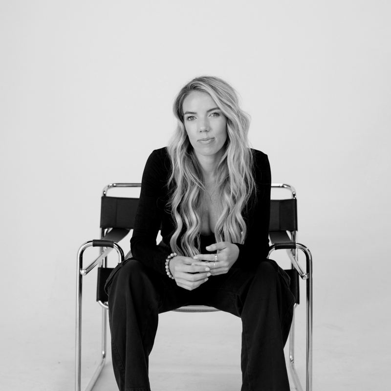
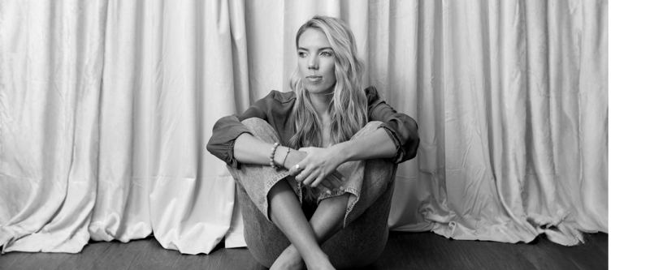

Episode notes · No. 40
In this episode, Katie explores why in-person connection matters so much — and why loneliness can affect our health in ways we don't always see. Through research, reflection, and real-life moments, she invites…
Listen · 19 minEpisode notes · No. 39
Who are you climbing the mountain with? So here's the thing... we can't stand the open space of not knowing. So we fill it. And what we fill it with is usually worse than reality — not knowing an outcome can…
Listen · 18 minEpisode notes · No. 38
You know the moment. You've got forty things to do, and you do none of them. You open the fridge and close it again. You pick up your phone to send one email and look up 20 minutes later.
Listen · 18 minEpisode notes · No. 37
Do you ever feel like you're on the outside looking in — even with people who love you? In this episode, Katie explores our deep human need to belong, and why belonging has less to do with being accepted by…
Listen · 20 minEpisode notes · No. 36
I had the answer. I had the knowing. I had the feeling. And I turned my back on it anyway. Twice this last year. Here's what it cost me.
Listen · 14 minEpisode notes · No. 35Do you feel free? Not on paper. I mean in your body, in your mind, in your actual days — do you feel free? In this episode, I share why personal freedom is one of the leading predictors of life satisfaction…
Listen · 14 min